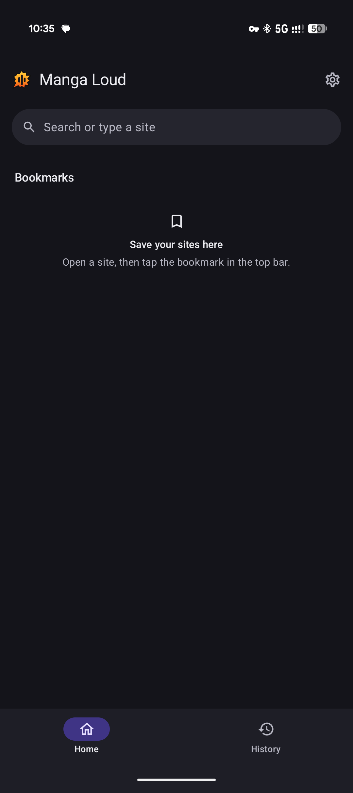
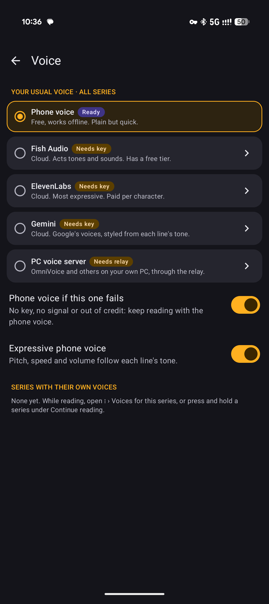
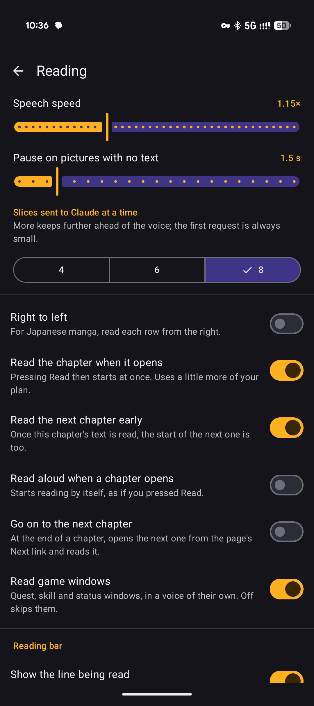

Manga Loud
An Android browser for manga, manhwa and webtoon sites that reads the speech bubbles aloud with expressive voices, and glides the page along with the voice.
Try it: open the demo chapter in Manga Loud and press Read aloud.



Source code, setup and downloads: github.com/Aarul5/mangaloud. Free software under GPL-3.0.